1
软件安装
1.1 JDK的安装配置
1)
进入Oracle的官方网站http://www.oracle.com，下载JDK（J2SE）。调测软件的运行需要JDK1.5以上的版本。
2)
按照提示进行JDK的安装。
3) JDK安装完成以后，进行JAVA_HOME环境变量的配置，在“我的电脑”上右键，选择“属性”。
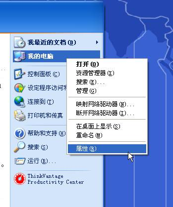
4)
在“系统属性”窗口中选择“高级”选项卡，选择“环境变量”进行编辑；
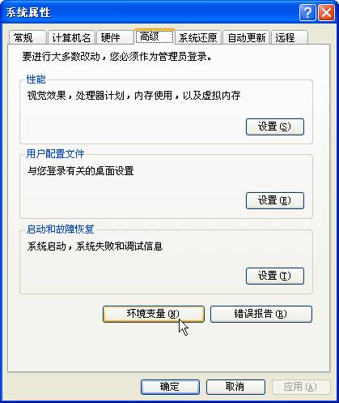
5)
在“系统变量”窗口中点击“新建”按钮，添加“JAVA_HOME”变量，值为JDK安装根目录，例如“C:\Program Files\Java\jdk1.5.0_12”，点击“确定”按钮保存。
注：必须先配置JAVA_HOME环境变量，再将JAVA_HOME下的bin目录配置到Path系统变量中，否则会导致系统无法启动。
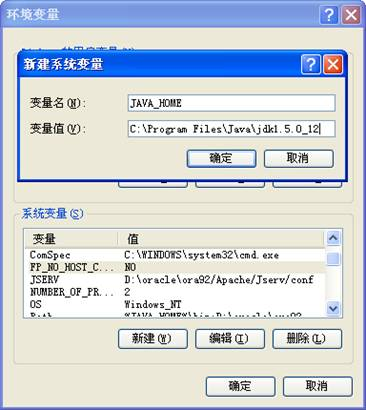
6)
在“系统变量”窗口中修改“PATH”的值，添加Java可执行程序的安装路径，值为“%JAVA_HOME%\bin”，点击“确定”按钮保存修改。
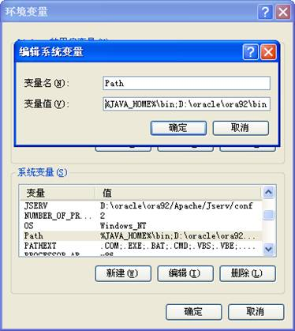
7)
测试JDK安装配置是否正确。选择“开始”菜单－>“运行”，键入“cmd”。在控制台窗口中键入命令“java -version”，出现下图画面与所安装的JDK版本一致，说明JDK安装配置成功。
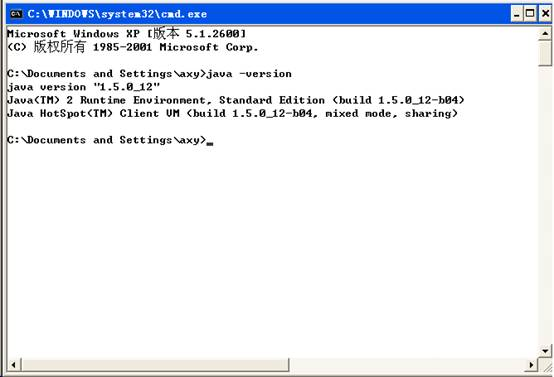
注：为方便打印，本图做了黑白反转处理。
1.2 调测软件安装
将调测软件的压缩包“SPVMN视频监控联网现场检测工具.rar”中的内容解压到任一驱动器的根目录下，解压后的文件夹名为“mss-1.4.0.FINAL-apache-tomcat-6.
1.3 运行环境要求
调测软件采用B/S架构，运行环境包括服务器端和IE客户端两部分内容。为使调测软件能够正常使用，对调测软件的运行使用环境要求如下。
1)
调测软件服务器环境要求：
Ø 调测软件服务程序支持在Windows 32位系统下运行。
Ø 调测软件服务程序所在机器上应只有一块网卡处于可用状态，只配置一个IP地址，通过控制台的“ipconfig /all”命令查看时应只有一个MAC地址，一个IP地址。
Ø 调测软件服务程序需使用5060、8080端口，需保证调测软件服务器程序所在机器上述端口不被其他程序占用。
Ø 操作系统安装在C盘，并且通过“我的电脑”右键菜单->属性->“系统属性”对话框->高级->“环境变量”按钮，打开环境变量对话框，在其中的“系统变量”栏，“path”变量中确认有 “C:\WINDOWS\system32;C:\WINDOWS;”
配置。
2)
调测软件客户端环境要求：
Ø 调测软件客户端程序支持在IE6及以上版本浏览器中运行，需卸载机器上安装的360浏览器等其他浏览器防止其他浏览器影响IE正常运行。
Ø 若使用IE7以上版本，应在Internet选项-〉常规-〉选项卡设置中去掉“启用选项卡式浏览”选项。如下图所示：
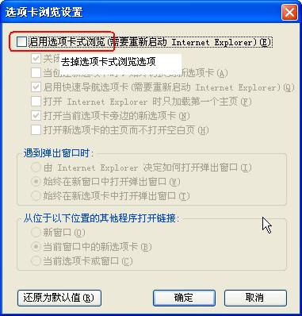
Ø 调测软件客户端所在机器上应只有一块网卡处于可用状态，只配置一个IP地址，通过控制台的“ipconfig /all”命令查看时应只有一个MAC地址，一个IP地址，否则会导致视频播放页面无法正常播放视频，配置如下图所示。
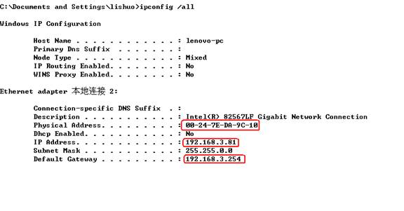
Ø 客户端IE插件会使用6000、6010、6020、6030、9910端口，应保证调测软件客户端程序所在机器上述端口不被其他程序占用。
Ø 客户端IE配置“Internet选项”-〉“安全”中需将调测软件服务器所在机器配置为可信站点，并在可信站点的“自定义级别”中进行安全设置，根据IE版本不同配置项有所不同，具体配置见附录A.1。
注：IE配置不正确可能导致实时、回放操作播放器窗口无法播放视频或回放控制中进行暂停、播放、快放、慢放等操作视频卡顿现象。
1.4 调测软件授权
SPVMN视频监控联网调测软件自测版采用License文件授权方式。使用方需提供安装使用情况以申请License授权文件。申请步骤如下。
1) 选定运行调测软件服务程序的计算机，取得计算机的相关配置参数。
u 通过控制台的“set”命令取得NUMBER_OF_PROCESSORS、OS、PROCESSOR_ARCHITECTURE、PROCESSOR_IDENTIFIER参数。
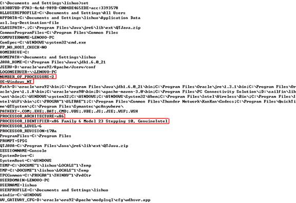
u 通过控制台的“ipconfig /all”命令取得Physical Address、IP Address参数。
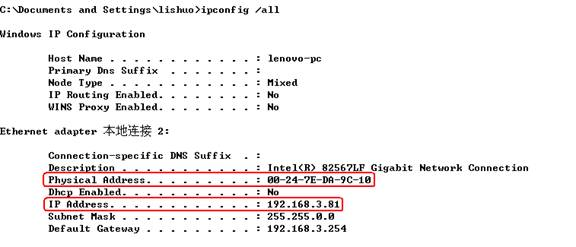
注：通过控制台的“ipconfig /all”命令查看时应只有一个MAC地址，一个IP地址，禁用掉其他网卡，否则会导致授权失败。
如下图所示：
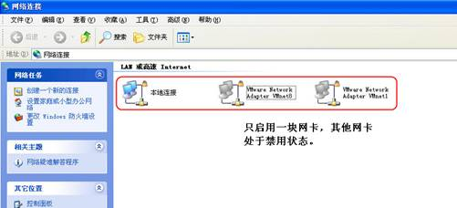
2) 将取得的计算机参数连同单位联系信息整理为如下格式的申请书后发往授权单位邮箱，申请授权“ssdserver.licnese”文件。
SPVMN视频监控联网调测软件授权申请书
|
申请单位 |
|
|
申请日期 |
|
|
联系人 |
|
|
联系电话 |
|
|
联系邮箱 |
|
|
调测内容（设备厂家，设备类型，设备型号，施工地点） |
|
|
NUMBER_OF_PROCESSORS |
|
|
OS |
|
|
PROCESSOR_ARCHITECTURE |
|
|
PROCESSOR_IDENTIFIER |
|
|
Physical Address |
|
|
IP Address |
|
公安机关单位可将申请文件发往如下公安网邮箱进行申请：
非公安机关单位或厂商可将申请文件发往如下公网邮箱进行申请：
lishuo _bit@163.com
3)
在申请文件通过评审后使用方将获得SPVMN视频监控联网调测软件的“ssdserver.licnese”授权文件，将该文件拷贝到调测软件服务程序的“\mss-
2
程序启动和终止
2.1 程序启动
开机后进入windows。
进入“驱动器名称:\mss-1.4.0.FINAL-apache-tomcat-6.0.29\bin”目录，启动“startup.bat”程序。弹出图中标识提示，说明服务器启动成功。
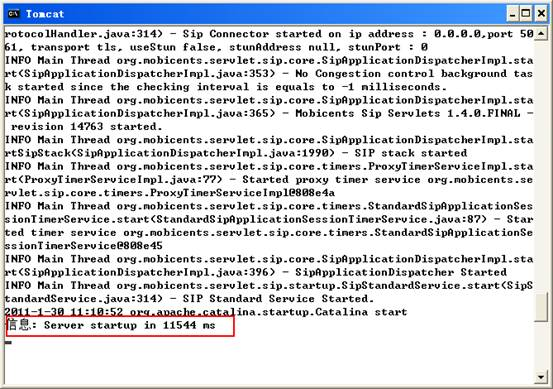
注：为方便打印，本图做了黑白反转处理。
2.2
程序终止
进入“驱动器名称:\mss-1.4.0.FINAL-apache-tomcat-6.0.29\bin”目录，启动“shutdown.bat”程序，停止调试软件。
3
调测软件使用说明
3.1 主界面
用户通过调测软件主界面可选择调测功能，编辑消息体并进行发送处理；消息发送后可查看待调测系统、设备与调测工具交互的消息流程、消息内容，并进行标准符合性比对。
启动调测软件后，在IE地址栏中输入调测软件的地址http://服务器IP:8080/SIPStandardDebug/，进入调试软件主页面如下图所示。
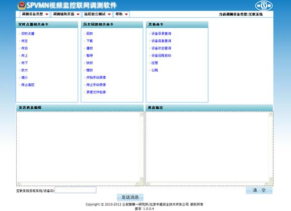
调测软件的主界面主要由如下几部分组成：
1.
菜单栏：包括“调测设备类型”、“调测辅助页面”、“流程组合测试”以及“帮助”菜单。
2.
消息选择区域：用于在调测过程中选择需要发送的消息，包含调测所需的所有命令。
3.
消息编辑区域：用于对软件生成的模板消息体进行必要的修改，然后发送给待测设备或者系统。
4.
消息输出区域：用于显示调测软件发送和接收到的SIP消息。
3.1.1
菜单栏
1.
“调测设备类型”菜单如下图所示：
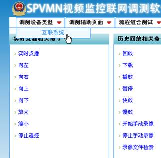
现场检测工具支持互联系统的调测。
菜单栏右侧显示当前选择的调测设备类型，如下图所示：
2.
“调测辅助页面”菜单如下图所示：
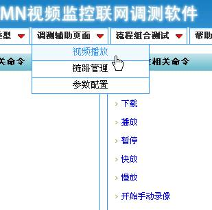
SPVMN调测软件的调测辅助功能说明如下：
Ø 参数配置：用于配置本软件和待测设备的相关参数，详见3.2节。
Ø 视频播放：用于在点播视频时创建视频播放窗口，详见3.4节。
Ø 链路管理：用于查看当前已注册的设备以及以建立的视频播放链路，详见3.5节。
3.
“流程组合测试”菜单如下图所示：
SPVMN调测软件的流程组合测试说明如下：
Ø 在线状态逻辑检测：用于检测调测设备的注册和心跳SIP消息，详见3.6节。
4.
“帮助”菜单如下图所示：
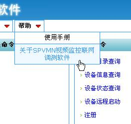
SPVMN调测软件的帮助选项说明如下：
Ø 使用手册：用户使用手册。
Ø 关于调测软件：用于查看版权和版本的信息。
3.1.2
消息选择区域
消息选择区域如下图所示：
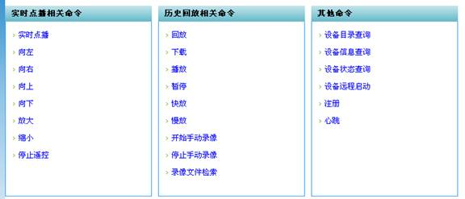
3.1.3
消息编辑区域
在消息选择区域中选择相关调测消息，消息编辑区域会显示该消息的消息体，并且消息体根据调测的消息类型，使用参数配置页面中配置的设备ID、IP、端口等参数。用户可以根据需要对其中的参数进行修改，例如发送MANSCDP消息时，将其<SN>值每次加1，避免和原有<SN>值重复。点击“发送消息”图标，可将消息发送到调测设备上。对各类调测消息参数的具体说明见3.8节。
在消息发送完成后，页面会自动保存用户最近发送的消息，便于下次选择该消息类型时减少编辑操作，如想恢复原始消息可通过刷新主页面实现。
注：进行互联系统调测时，通过在“互联系统目标系统/设备ID”中输入互联系统或设备的ID指定请求消息的To头域的ID值，用于标识请求消息目标地址。互联系统在收到此消息后应根据To头域的ID值区分处理。以历史文件检索消息为例，若为系统ID则互联系统进行中心历史记录检索，若为设备ID则将消息转发到设备进行设备历史记录检索。如果不指定该ID，则调测软件将使用参数配置页面中配置的互联系统设备ID作为默认值。
3.1.4
消息输出区域
消息输出区域会实时显示当前调测软件所收发的消息。用户可以对该编辑区中的消息进行复制、删除、清空等操作。对于设备收发的消息可以同“安全防范视频监控联网系统信息传输、交换、控制技术要求”附录J中的消息对照，看是否符合规范。
点击“清空”图标，可以清空该区域的消息内容，也可手动复制、删除该区域内容。
注：有时会出现消息已发送但消息输出区域不显示的情况，与客户端页面同服务器连接断开连接有关，可尝试重新刷新页面恢复。
3.2 调测参数配置
为了使调测软件能与待测平台实现对接调试，需要对调测软件和待测平台的相关参数进行配置。用户通过调测软件的参数配置页面对调测软件的参数进行配置。
用户可点击“调测辅助页面”中的“参数配置”链接访问配置管理页面，如下图所示。
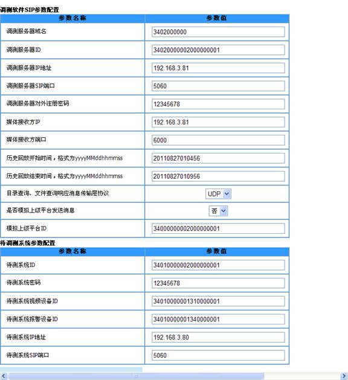
进行参数配置操作步骤如下：
1） 进入“配置管理”界面以后，页面自动加载当前调测软件的配置参数信息。
2） 用户可对当前的配置参数进行修改。
3） 修改完成后，通过“保存修改”按钮保存修改，可通过刷新调测软件界面使新的配置生效。
4） 可通过“恢复默认配置”按钮恢复到默认配置。
5） 进行调测软件参数配置完成后，需根据配置参数在待调测系统或设备上进行对应的参数配置，使其配置与调测软件一致。
参数配置页面里的各项参数说明如下：
注：配置中使用的ID需参照国标附录D.1定义的规则进行配置，设备的ID前10位为域名标识，应与调测服务器相同，第14位为网络标识，应与调测软件属于调测软件网络标识一致。
调测软件SIP参数配置（必须配置）：
调测服务器域名：标识调测软件所在的域，为调测服务器ID的前10位数字。
调测服务器ID：调测软件ID标识，由20位数字组成，编码格式遵循国标附录D.1。
调测服务器本地IP地址：调测服务器所在机器的IP地址
调测服务器本地SIP端口：调测服务器所在机器SIP端口，默认是5060。
调测服务器对外注册密码：默认值12345678。
媒体接收方IP：实时、历史点播消息体使用，标识接收媒体流的IP地址，可在编辑消息体时修改。
媒体接收方端口：实时、历史点播消息体使用，标识接收媒体流的端口，可选端口6000、6010、6020、6030，可在编辑消息体时修改。
历史回放开始时间：播放历史视频的开始时间。
历史回放结束时间：播放历史视频的结束时间。
目录查询、文件查询响应消息传输层协议：调测软件发送的目录查询、文件查询响应消息采用传输层协议1:UDP,0:TCP。
是否模拟上级平台发送消息：用于跨级MANSCDP消息仿真，配置是否模拟上级平台发送MANSCDP消息。
模拟上级平台ID：模拟上级平台的编号，例如调测服务器ID配置为“34010000002000000001”（行政区划位置编码为市级平台），则此处可配置为“34000000002000000001” （行政区划位置编码为省级平台）。如果选项“是否模拟上级平台发送消息”为“否”，则此项配置无效。
待调测系统参数配置（调测平台时需要配置）：
待测系统ID：20位数字ID，11-13位置为200（SIP服务器）。
待测系统密码：默认值12345678。
待测系统视频设备ID：默认的外域视频源ID，20位数字ID。
待测系统报警设备ID：默认的报警设备ID，20位数字ID。
待测系统IP地址：待测系统的IP地址。
待测系统SIP端口：待测系统SIP服务器端口，默认为5060。
3.3 消息提示
在发送消息时，如果发送成功会有消息已发送提示。
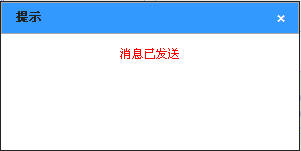
如果发送失败会提示失败原因，如下图所示。
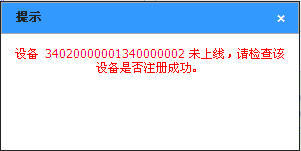
在接收到调测设备发送的SIP消息时，调测软件会检查消息体中的必填项内容是否存在，如果存在必填字段缺失或者格式不正确则会显示提示消息，如下图所示。
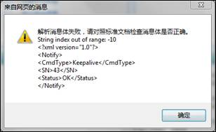
目前的错误提示主要有以下几类：
Ø
未选择发送消息类型。
Ø
设备未上线，请检查该设备是否注册成功。
Ø
未找到回放连接，请先建立一路回放连接再开始回放控制。
Ø
回放连接尚未建立，请建立成功回放连接再开始回放控制。
Ø
解析调测设备发送的SIP消息失败，请检查消息格式。
3.4 视频播放与下载
用户通过视频播放与下载界面可进行实时点播、历史视频回放及控制、历史视频下载功能的信令流程、媒体格式的调测。实时点播、历史视频回放及控制调测可通过播放插件对获取的视频进行播放的方式判断码流是否符合标准；历史视频下载可通过对获取的视频保存为本地文件并播放的方式判断码流是否符合标准。
3.4.1
视频播放
通过点击菜单栏的“调测辅助页面”->“视频播放”链接进入视频播放页面，如下图所示。
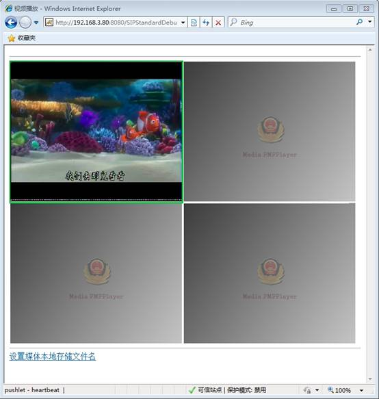
通过视频播放窗口，在媒体流为标准媒体流能够被播放插件正确解码的情况下，可以在调测实时点播、前端遥控、回放、回放控制等消息时通过观看视频直观的查看调测效果。
播放视频的操作步骤如下：
1） 在主页面选择实时播放、回放、下载等消息类型，并在“发送消息”窗口中进行相应参数修改，修改位置如下图所示：
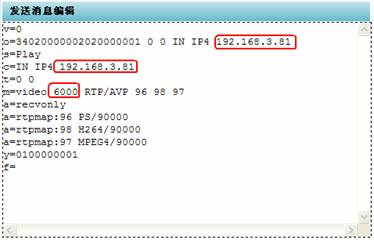
其中，媒体发送的IP为媒体流发送到播放页面所在机器的IP，为便于调测，媒体发送端口同视频播放页面窗口进行了对应处理，对应关系如表1所示：
表1 媒体发送端口同视频播放页面窗口对应表
|
媒体接收端口 |
窗口 |
|
6000 |
窗口1（左上窗口） |
|
6010 |
窗口2（右上窗口） |
|
6020 |
窗口3（左下窗口） |
|
6030 |
窗口4（右下窗口） |
2） 发送消息，设备在正确处理消息，并能发送标准码流的情况下，在播放窗口就能播放出视频。
注1：如果没有进行IE配置和媒体播放插件安装，打开视频播放页面会出现如下图提示，需要按照附录A中的步骤进行IE配置和插件安装。
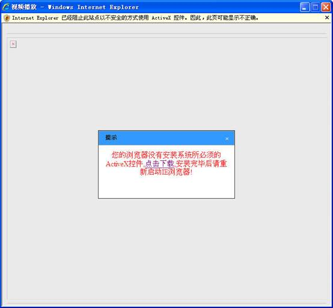
注2：在进行解码器调测、互联系统调测时，调测软件支持向解码器、互联系统发送PS封装的标准H.264媒体流，便于解码器、互联系统调测媒体流接收、解码功能。应在调测完成后关闭调测服务程序之前将媒体链路断掉以终止媒体流发送程序，若没有停止发流程序关闭调测服务程序后媒体流发送程序不会自动退出并且占用较高的CPU，在下次启动调测服务程序时，调测服务程序会将其关闭。
注3：在进行视频点播之前应先打开视频播放页面，否则视频不会正常播放。
注4：有时会出现视频流发送到客户端无法播放情况，如果视频编码、封装格式正确可能是客户端运行环境影响播放端口正常打开，应按照1.3节检查运行环境解决播放问题，临时播放可尝试采用命令方式强制在对应窗口打开视频端口。如下图所示。
在对应播放窗口中使用右键菜单，选择“打开本地文件”。
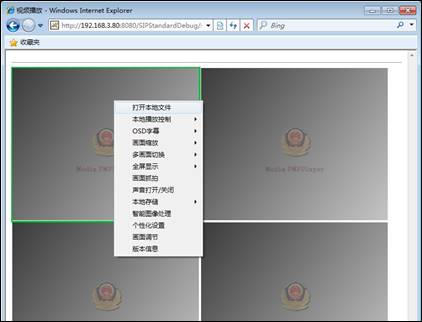
在输入媒体路径窗口中输入“udp://@客户端IP:播放窗口对应端口”命令，点击“OK”按钮。

注5：视频插件在进行解码播放时，若码流发送不标准或多路码流同时发送到同一解码窗口可能出现播放插件解码失败，IE页面报错的现象，此时需停止码流发送重新启动IE，此现象是发送码流错误造成，而非调测软件缺陷。
3.4.2
视频下载
首先，设置本地媒体存储目录，如下图所示，打开视频播放界面，点击“设置媒体本地存储文件名”连接，设定目录。为保证下载文件不重名，每次下载操作之前均须设置本地媒体存储目录。
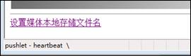
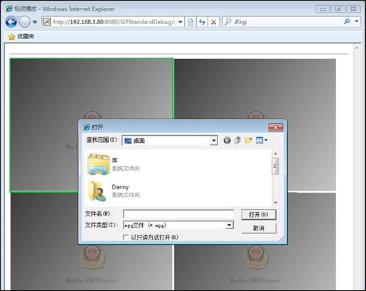
接着，回到调测软件主界面，在“历史回放相关命令”中选择“下载”，修改模板消息中必要的参数（端口改为9910）后，下载历史视频。
待下载结束后，调测工具收到下载完成通知消息后会断开链路，或者通过链路管理功能手动断开链路，如下图所示。
注1：下载视频文件时，不要关闭视频播放界面。
注2：媒体流下载端口为9910，请确认该端口没有被系统内的其他进程占用。
注3：下载保存本地文件功能支持格式为H.264、Mpeg的PS流存储和H.264的ES流存储。
3.5 链路管理
通过点击菜单栏的“调测辅助页面”->“链路管理”链接进入链路管理页面，如下图所示。
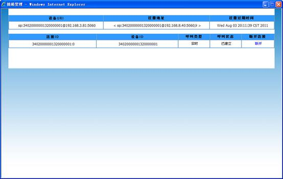
链路管理的第一个列表显示了当前注册上来的设备，包括设备URI、注册地址、注册过期时间等参数；
第二个列表显示了当前点播的实时、回放、下载等视频连接，包括连接ID、设备ID、呼叫类型、呼叫状态、断开连接等内容，通过点击“断开”可以断开指定的视频。
通过IE右键菜单->刷新，可以更新页面显示当前最新链接情况。
3.6 在线状态逻辑检测
3.6.1
调测内容
使用注册、心跳消息进行状态检测逻辑的说明如下。
3.6.1.1 注册/注销功能补充说明
系统、设备启动时，根据预先配置的注册服务器的地址，向注册服务器发起注册过程。正常终止时，应向注册服务器发送注销消息。
若注册失败，应定时重新发起注册过程，时间间隔可配置，缺省值为60秒。
系统、设备注册过期时间应可配置，缺省值为3600秒 。
系统、设备只注册本身，默认设备下属的通道资源在设备注册成功后可用。
3.6.1.2 心跳保活功能补充说明
系统、设备在注册成功后应定时向注册服务器发送心跳保活消息。
心跳发送方、接收方需协商配置“心跳间隔”参数，按照心跳间隔定时发送心跳消息。心跳时间间隔不宜过短，建议最短心跳间隔设置为60秒。
心跳发送方、接收方需协商配置“心跳超时次数”参数，心跳消息连续超时达到“心跳超时次数”则认为对方系统下线，默认心跳超时次数3次。
3.6.1.3 系统、设备状态检测补充说明
系统与系统、系统与设备通过注册、心跳机制实现上线、刷新绑定、保活、下线状态检测。接受注册、心跳的系统为注册接收方，发送注册、心跳的系统/设备为注册发起方。
状态检测流程如下图所示：
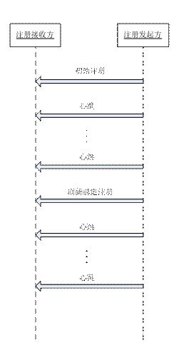
注册发起方启动时应向注册接收方发送初始注册消息，若注册成功则认为对方在线，并定时发送刷新绑定注册、心跳消息，根据RFC3261规定，刷新绑定消息应在上一次注册过期时间到来之前发送。
注册接收方检测到以下事件则认为注册发起方离线：
Ø 注册发起方注册消息格式不符合标准、注册密码不一致等导致注册失败；
Ø 注册发起方上线后没有进行刷新绑定注册导致注册过期；
Ø 注册发起方上线后没有心跳消息连续超时达到商定次数；
注册发起方检测到以下事件则认为注册接收方离线，注册发起方需要向注册接收方重新发起注册：
Ø 注册接收方消息格式不符合标准、注册密码不一致等导致注册失败；
Ø 注册接收方上线后心跳消息响应消息连续超时达到商定次数；
3.6.2
使用说明
通过点击菜单栏“流程组合测试”中的“在线状态逻辑检测”来启动在线状态逻辑检测界面。设备、系统在线状态管理模块主要功能分为：上联调测和下联调测。下图为在线状态管理主界面，其分为两部分：检测配置和消息输出控制台。
注：IE 6版本的用户在使用该功能时，应新建IE窗口，在地址栏中输入：http://调测软件IP地址:8080/SIPStandardDebug/sip/status_detection/status_detection.jsp打开调测页面进行调试；否则，可能遇到调测信息无法显示的问题。
检测配置主要用于调测参数配置，包括调测类型，调测设备或者系统，注册时间，心跳间隔，心跳连续超时次数等参数。
消息输出控制台用于输出调测的相关提示信息。其中，白色日志表示用户操作消息，红色日志表示异常消息，橙色日志表示警告消息，绿色日志表示正常消息。调测结束后，可复制控制台消息并将其保存至文本文件，供调测结果分析时使用。
“开始检测”连接用于在参数配置完成后启动检测过程。
“停止检测”连接用于在状态逻辑检测结束后停止检测过程。
“清空消息”连接用于清空消息输出控制台内容。
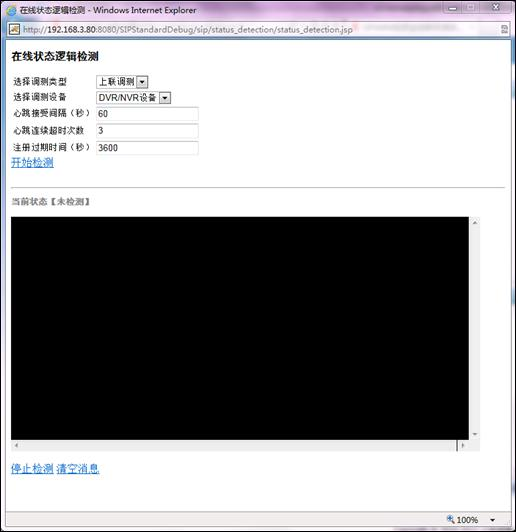
注：在开始检测时会首先将待检测平台/设备的状态置于“离线”，此时消息输出控制台输出的“设备/系统状态更新：离线”提示属于正常开始检测的输出内容
3.6.2.1 上联调测
上联调测 �C 调测软件作为上级平台，设备或者系统向其发送注册和心跳SIP信令，以检测其状态检测逻辑符合性。
上联调测操作步骤为：
1）在“选择调测类型”中选择“上联调测”，在“选择调测设备”中选择需要进行调测的下级设备（其编号等配置信息需在“参数配置”模块中预先配置），并设置注册时间，心跳间隔，心跳连续超时次数等参数。
2）参数配置完成后，点击“开始检测”链接启动检测。
3）观察消息输出控制台输入日志内容。
异常消息及其可能的原因进行说明如下：
1）摘要校验失败消息：在设备或者系统发送的第二条注册消息中的认证信息有误，可能的原因有配置密码不一致或者算法错误，如下图所示。
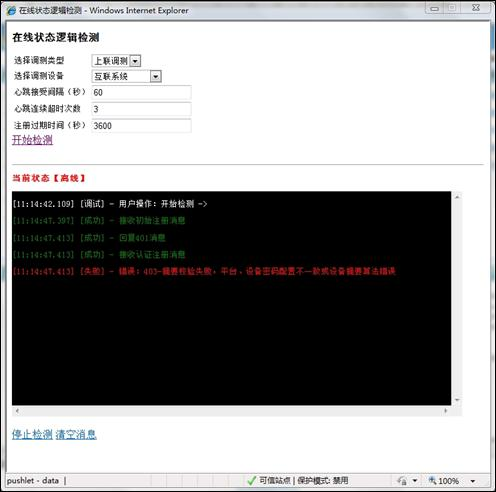
2）心跳消息超时 + 次数消息：表示在当前的心跳接收时间段里没有检测到设备或者系统发送的心跳消息次数，连续超时次数会累加，不连续则清零。
3）设备或系统离线消息：调测软件将设备或者系统的状态设置为离线，不再接受心跳消息，设备需重新注册，可能的原因有注册失败，注册过期，心跳超时连续超时达到最大次数等，如下图所示（心跳超时下线）。
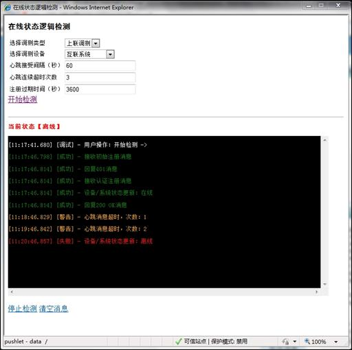
4）离线心跳消息：设备或者系统在离线的状态下发送的心跳消息，此消息调测软件将不予处理，需设备或者系统重新进行注册上线后恢复处理。
注1：在上联调测开始时，如果待测设备已在线，那么调测软件会先强制将其下线，以便开始完整的调测流程。
注2：在参数配置时，应将DVR/NVR设备、IPC设备和解码器设备的ID配置为本域设备（即编号前10位与调测软件相同）；互联系统的ID配置为外域系统（即编号前10位与调测软件不同）
注3：在上联调测过程中，如果待测设备/系统离线，调测软件会断开其所有视频链接。
3.6.2.2 下联调测
下联调测 �C 调测软件做为下级平台，调测软件向上级待测系统发送注册和心跳SIP信令，以检测上级系统状态检测逻辑符合性。
下联调测操作步骤为：
1）在“选择调测类型”中选择“下联调测”，在选择调测设备中选择“互联系统”（注：下联调测只能选择互联系统，否则无法启动），设置注册过期时间、心跳发送间隔、心跳连续超时次数。
2）参数配置完成后，点击“开始检测”链接启动检测。
3）观察消息输出控制台输入日志内容。
为了便于用户进行诊断，异常消息及其可能的原因进行说明如下：
1）离线消息：调测软件在上级待测系统中已离线，由于调测软件会严格按照注册流程发送信令，保证其自身在线状态，因此，原因可能为待测系统在处理注册或者心跳消息时出现问题。如下图所示，调测软件在注册成功上线后，发送心跳没有收到上级待调测系统的回复，于是，认为上级待调测系统离线，发起重新注册。但是，上级系统依然没有回复该注册消息，可能的原因是网络断开或者上级系统注册消息处理问题。
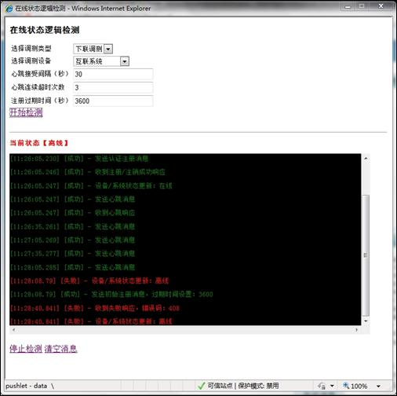
2）408 响应 消息：上级平台认为调测软件已离线，对收到的调测软件心跳消息应不予响应，又协议栈回复的408响应。正常情况下，上级平台应该及时回复调测软件的心跳消息。
3.6.2.3 控制台消息说明
调测软件根据消息的严重性级别，将输出到控制台的消息分为4个级别：调试、正常、警告、错误，分别用白色、绿色、橙色和红色进行显示。下面，将具体介绍这些输出消息的内容、含义，并分析其出现的原因和解决方法。
状态变更消息（上联和下联调测中都会出现此类消息，表示调测设备或者系统的在线状态变更）：
|
序号 |
输出消息 |
消息级别 |
原因分析 |
解决方法 |
|
1 |
设备/系统状态更新：在线 |
正常 |
调测设备或者系统初次注册成功，状态更新为在线 |
|
|
2 |
设备/系统状态更新：离线 |
错误（如果为主动注销操作导致设备离线，则该消息为正常） |
调测设备或者系统因为心跳超时、注册失败、注册过期、注销操作等导致离线 |
检查待调测设备或系统注册心跳流程是否符合状态检测逻辑规定。 |
|
3 |
设备/系统刷新注册 |
正常 |
调测设备或者系统刷新注册成功 |
无 |
上联调测消息：
|
序号 |
输出消息 |
消息级别 |
原因分析 |
解决方法 |
|
1 |
接收初始注册消息 |
正常 |
接收到下级平台或者设备的初始注册消息（不包含认证头域） |
|
|
2 |
接收认证注册消息 |
正常 |
接收到下级平台或者设备的认证注册消息（包含认证头域） |
|
|
3 |
回复401消息 |
正常 |
接收到下级平台或者设备的初始注册消息后回复401消息 |
|
|
4 |
回复200 OK消息 |
正常 |
接收到下级平台或者设备的认证注册消息，认证通过后回复200 OK消息 |
|
|
5 |
注册过期 |
错误 |
下级平台或者设备没有根据指定的Expires头域刷新注册，导致注册过期离线 |
检查待测设备定时注册功能。根据RFC3261规定，应在注册过期时间到达之前提前发送刷新注册消息；而不应再注册过期时间到达时刻或之后发送刷新注册消息 |
|
6 |
正常心跳消息，回复200 OK |
正常 |
正常心跳 |
|
|
7 |
离线心跳消息，等待设备系统重新注册 |
错误 |
下级平台或者设备已经处于离线状态，仍然向调测软件发送心跳消息，调测软件不予处理 |
待测设备或者平台需要根据调测软件不回复心跳这一现象，判断自身已经离线，需要重新注册上线 |
|
8 |
心跳消息超时，次数：[N] |
警告 |
下级平台或者设备没有根据指定的时间间隔向调测软件发送心跳消息，[N]表示连续心跳超时次数 |
检查待测设备定时发送心跳消息的功能 |
下联调测消息：
|
序号 |
输出消息 |
消息级别 |
原因分析 |
解决方法 |
|
1 |
发送初始注册消息，过期时间设置：[N] [N]表示注册过期时间，0表示注销消息 |
正常 |
调测软件向上级待测平台发送初始注册、注销消息（不包含认证头域） |
|
|
2 |
发送认证注册消息 |
正常 |
调测软件向上级待测平台发送认证注册、注销消息（包含认证头域） |
|
|
3 |
收到401响应 |
正常 |
调测软件收到该消息后，将发送认证注册消息 |
未出现此消息则表示上级平台没有正确处理注册逻辑 |
|
4 |
收到注册/注销成功响应 |
正常 |
注册、注销成功 |
|
|
5 |
收到失败响应，错误码： |
错误 |
注册失败 |
错误代码说明应参照RFC326并定位原因。如错误代码408表示超时，则检查网络和服务是否正常 |
|
6 |
发送心跳消息 |
正常 |
向上级平台发送心跳消息 |
调测软件根据配置的心跳间隔时间定时向上级平台发送心跳消息 |
|
7 |
收到心跳响应 |
正常 |
接收上级平台的心跳响应 |
如果没有显示该消息，表示上级平台没有回复心跳。需检查上级平台处理是否正确。 |
|
8 |
错误：403-摘要校验失败，平台、设备密码配置不一致或者设备摘要算法错误 |
错误 |
发送认证注册消息后收到该消息表示注册失败 |
原因可能是由于配置的密码或者算法错误造成 |
用户操作消息：
|
序号 |
输出消息 |
消息级别 |
原因分析 |
解决方法 |
|
1 |
用户操作：开始检测 -> |
调试 |
用户启动调测。此时调测软件会首先将待测设备或者系统状态置为离线初始状态 |
|
|
2 |
用户操作：停止检测 <- |
调试 |
用户停止调测。上联、下联调测结束时，应点击停止检测连接结束检测任务，此时调测软件会将待测设备或者系统状态置为离线初始状态 |
|
3.7 跨级MANSCDP消息仿真
3.7.1
调测内容
通过跨级MANSCDP消息仿真功能，可以检测设备或系统在接收到经过路由转发处理的MANSCDP消息后，对消息头域中FROM和TO头域的处理逻辑是否符合RFC3261规定。
按照RFC3261中对From、To头域的定义，MANSCDP消息中，From、To头域URI中的ID值分别用作标识消息源和目的。MANSCDP响应消息中To头域URI中的ID值应使用MANSCDP请求消息中From头域URI中的ID值，用于MANSCDP响应消息标识发送目的。
此功能用于系统/设备的上联调测，模拟发送消息类型为调测的各类MANSCDP请求消息，具体类型如下：
Ø 设备目录查询
Ø 遥控
Ø 开始/停止录像
Ø 设备视音频文件检索
Ø 报警设备布/撤防
Ø 报警事件通知和分发
Ø 报警复位
Ø 设备信息查询
Ø 设备状态查询
Ø 远程启动
3.7.2
使用说明
1）进行模拟上级平台功能调测，应首先进行参数配置。将配置页面“是否模拟上级平台发送消息”配置为“是”，并配置“模拟上级平台ID”。如下图所示。
在“参数配置”中配置模拟项
2）参数配置完成后，进行MANSCDP消息的发送调测。消息发送后，可在“消息输出”中查看发送模拟上级平台的请求消息，其中，FROM头域为“参数配置”中的“模拟上级平台ID”。
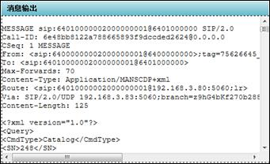
3）下级平台/设备收到请求后进行处理回复。可在“消息输出”中查看到接收下级平台返回的相应消息，其中，TO头域应为请求的FROM头域。调测工具根据其回复响应是否正确会进行解析并输入提示。
下图为响应消息From、To头域符合规定，工具解析后的成功提示：
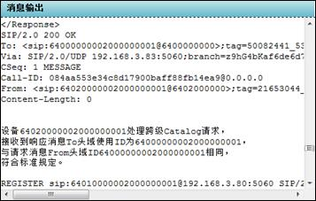
下图为响应消息From、To头域不符合规定，工具解析后的失败提示：
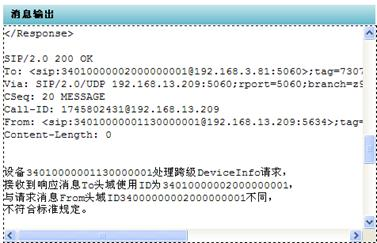
3.8 消息编辑区域消息参数说明
调试中的消息体默认参数具体说明如下，用户在调测过程中可以根据需要在消息编辑区域编辑修改消息体参数。
3.8.1
注册
注册消息不包含消息体，通过SIP头域传递地址、安全认证相关参数。在发送注册消息时，通过编辑expire值，标识注册或注销消息，expire值对应注册消息中“Expire”头域的值，如下图所示。
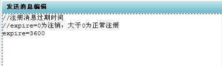
注册消息为平台向互联系统发送消息，或接受设备、互联系统发过来的消息。
3.8.2
心跳
在选择调试设备类型以后，点击“心跳”后消息编辑区域会出现以下消息体：
<?xml
version="1.0"?>
<Notify>
<CmdType>Keepalive</CmdType>
<SN>43</SN>
<DeviceID>34020000002000000001</DeviceID>
<Status>OK</Status>
</Notify>
心跳消息为平台向互联系统发送消息，或接受设备、互联系统发过来的消息。其中“<DeviceID>34020000002000000001</DeviceID>”中的“34020000002000000001”，为心跳发送方携带的设备ID，对应配置文件中待测系统视频设备ID。
3.8.3
设备目录查询
在选择调试设备类型以后，点击“设备目录查询”后消息编辑区域会出现以下消息体：
<?xml version="1.0"?>
<Query>
<CmdType>Catalog</CmdType>
<SN>248</SN>
<DeviceID>34020000001110000001</DeviceID>
</Query>
其中“<DeviceID>34020000001110000001</DeviceID>”中的“34020000001110000001”，为所检索的目标设备的设备/区域/安全防范视频监控联网系统/区域编码，对应配置文件中待测系统视频设备ID；
3.8.4
实时点播
在选择调试设备类型以后，点击“实时点播”后消息编辑区域会出现以下消息体：
v=0
o=34020000002020000001 0 0 IN IP4 192.168.3.10
s=Play
c=IN IP4 192.168.3.10
t=0 0
m=video 6000 RTP/AVP 96 98 97
a=recvonly
a=rtpmap:96 PS/90000
a=rtpmap:98
H264/90000
a=rtpmap:97
MPEG4/90000
y=0100000001
f=
其中，“o=34020000002020000001 0 0 IN IP4 192.168.3.10”中的“192.168.3.10”默认取值为配置管理中媒体接收方IP地址；
“s=Play”表示进行的是视频实时点播；
“c=IN IP4 192.168.3.10” 中的“192.168.3.10” 默认取值为配置管理中媒体接收方IP地址；
“m=video 6000 RTP/AVP 96 98 97”中的“6000” 默认取值为配置管理中媒体接收方端口；
“y=0100000001”标识发送流时的RTP SSRC值；
3.8.5
遥控消息
向左、向右、向上、向下、放大、缩小、停止遥控等消息格式如下：
<?xml version="1.0"?>
<Control>
<CmdType>DeviceControl</CmdType>
<SN>11</SN>
<DeviceID>34020000001310000004</DeviceID>
<PTZCmd>A50F01021F0000D6</PTZCmd>
</Control>
其中“<DeviceID>34020000001310000004</DeviceID>”中的“34020000001310000004”，为所遥控的摄像机ID，对应配置管理中待测系统视频设备ID；
“<PTZCmd>A50F01021F0000D6</PTZCmd>”中的“A50F01021F0000D6”为控制码，默认遥控的摄像机地址码为“1”。
3.8.6
录像
在选择调试设备类型以后，点击“开始手动录像”后消息编辑区域会出现以下消息体：
<?xml version="1.0"?>
<Control>
<CmdType>DeviceControl</CmdType>
<SN>17</SN>
<DeviceID>34020000001310000004</DeviceID>
<RecordCmd>Record</RecordCmd>
</Control>
其中 “<DeviceID>34020000001310000004</DeviceID>”中的“34020000001310000004”，为所录像的摄像机ID，对应配置文件中待测系统视频设备ID；
“<RecordCmd>Record</RecordCmd>”中的“Record”标识开始手动录像，“StopRecord”标识停止手动录像。
3.8.7
录像文件检索
在选择调试设备类型以后，点击“录像文件检索”后消息编辑区域会出现以下消息体：
<?xml version="1.0"?>
<Query>
<CmdType>RecordInfo</CmdType>
<SN>17430</SN>
<DeviceID>34020000001310000001</DeviceID>
<StartTime>2010-11-11T19:46:17</StartTime>
<EndTime>2010-11-12T19:46:17</EndTime>
<Type>time</Type>
</Query>
其中“<DeviceID>34020000001310000001</DeviceID>”中的“34020000001310000001”，为所检索的摄像机ID，对应配置文件中待测系统视频设备ID；
“<StartTime>2010-11-11T19:46:17</StartTime>”表示录像开始时间；
“<EndTime>2010-11-12T19:46:17</EndTime>”表示录像结束时间；
“<Type>time</Type>” 中的“time”标识检索录像类型，“time”表示定时录像，“alarm”表示报警录像，“manual”表示手动录像，“all”表示全部录像；
3.8.8
回放
在选择调试设备类型以后，点击“回放”后消息编辑区域会出现以下消息体：
v=0
o=34020000002020000001 0 0 IN IP4 192.168.3.10
s=Playback
u=34020000001310000004:3
c=IN IP4 192.168.3.10
t=1289786400 1289786700
m=video 6000 RTP/AVP 96 98 97
a=recvonly
a=rtpmap:96 PS/90000
a=rtpmap:98
H264/90000
a=rtpmap:97
MPEG4/90000
y=1100000000
f=
其中，“o=34020000002020000001 0 0 IN IP4 192.168.3.10”中的“192.168.3.10”默认取值为配置管理中媒体接收方IP地址；
“s= Playback” 表示进行的是视频回放；
“u=34020000001310000004:
“c=IN IP4 192.168.3.10” 中的“192.168.3.10”默认取值为配置管理中媒体接收方IP地址；
“t=1289786400 1289786700”标识回放的起止时间，默认使用配置管理中的历史回放开始时间作为开始时间，历史回放结束时间作为结束时间，格式为对应时间转换为相对1970年的时间精确到秒；
“m=video 6000 RTP/AVP 96 98 97”中的“6000”默认取值为配置管理中媒体接收方端口；
“y=1100000000”标识发送流时的RTP SSRC值；
3.8.9
暂停
在选择调试设备类型以后，点击“暂停”后消息编辑区域会出现以下消息体：
PAUSE RTSP/1.0
CSeq: 1
PauseTime: 15
其中“PauseTime: 15”表示以相对开始时间15秒的位置进行暂停；
3.8.10
播放
在选择调试设备类型以后，点击“播放”后消息编辑区域会出现以下消息体：
PLAY RTSP/1.0
CSeq: 2
Scale: 1.0
Range: npt=15-
其中“Range: npt=15-”表示以相对开始时间15秒的位置进行播放；
3.8.11
快放
在选择调试设备类型以后，点击“快放”后消息编辑区域会出现以下消息体：
PLAY RTSP/1.0
CSeq: 3
Scale: 2.0
Range: npt=0-
其中“Scale: 2.0”表示以2倍速方式进行播放；
3.8.12
慢放
在选择调试设备类型以后，点击“慢放”后消息编辑区域会出现以下消息体：
PLAY RTSP/1.0
CSeq: 3
Scale: 0.5
Range: npt=0-
其中“Scale: 0.5”表示以0.5倍速方式进行播放；
3.8.13
设备信息查询
在选择调试设备类型以后，点击“设备信息查询”后消息编辑区域会出现以下消息体：
<?xml version="1.0"?>
<Query>
<CmdType>DeviceInfo</CmdType>
<SN>17430</SN>
<DeviceID>34020000001110000001</DeviceID>
</Query>
其中“<DeviceID>34020000001110000001</DeviceID>”中的“34020000001110000001”，为所查询的设备ID，对应配置文件中待测系统视频设备ID；
3.8.14
设备状态查询
在选择调试设备类型以后，点击“设备状态查询”后消息编辑区域会出现以下消息体：
<?xml version="1.0"?>
<Query>
<CmdType>DeviceStatus</CmdType>
<SN>248</SN>
<DeviceID>34020000001110000001</DeviceID>
</Query>
其中“<DeviceID>34020000001110000001</DeviceID>”中的“34020000001110000001”，为所查询的设备 ID，对应配置文件中待测系统视频设备ID；
3.8.15
下载
在选择调试设备类型以后，点击“下载”后消息编辑区域会出现以下消息体：
v=0
o=34020000002020000001 0 0 IN IP4 192.168.3.10
s=Download
u=34020000001310000004:3
c=IN IP4 192.168.3.10
t=1289786400 1289786700
m=video 9910 RTP/AVP 96 98 97
a=recvonly
a=rtpmap:96 PS/90000
a=rtpmap:98
H264/90000
a=rtpmap:97
MPEG4/90000
y=1100000000
f=
其中，“o=34020000002020000001 0 0 IN IP4 192.168.3.10”中的“192.168.3.10”默认取值为配置管理中媒体接收方IP地址；
“s=Download”表示进行的是视频下载；
“u=34020000001310000004:
“c=IN IP4 192.168.3.10” 中的“192.168.3.10” 默认取值为配置管理中媒体接收方IP地址；
“t=1289786400 1289786700”标识下载的起止时间，默认使用配置管理中的历史回放开始时间作为开始时间，历史回放结束时间作为结束时间，格式为对应时间转换为相对1970年的时间精确到秒；
“m=video 9910 RTP/AVP 96 98 97”中的“9910”默认取值为下载端口；
“y=1100000000”标识发送流时的RTP SSRC值；
3.8.16
设备远程启动
在选择调试设备类型以后，点击“设备远程启动”后消息编辑区域会出现以下消息体：
<?xml version="1.0"?>
<Control>
<CmdType>DeviceControl</CmdType>
<SN>17298</SN>
<DeviceID>34020000001110000001</DeviceID>
<TeleBoot>Boot</TeleBoot>
</Control>
其中“<DeviceID>34020000001110000001</DeviceID>”中的“34020000001110000001”，为所查询的设备 ID，对应配置文件中待测系统视频设备ID；
4
软件调测内容及通过依据
调测软件作为待调测系统上级平台的调测称为上联调测；调测软件作为待调测系统下级平台的调测称为下联调测。
现将使用调测软件进行调测的调测内容及通过依据说明如下。
4.1 注册
4.1.1
调测内容
支持安全防范视频监控联网系统等注册消息的上联、下联调测。
4.1.2
通过依据
上联调测通过依据：
1） 消息流程及参数符合国标9.1节规定；
2） 待调测系统向调测软件注册成功后，在调测软件链路管理页面中能够看到对应的待调测系统注册记录，如下图所示：
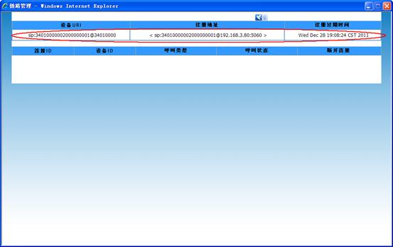
下联调测通过依据：
1） 消息流程及参数符合国标9.1节规定；
2） 调测软件向待调测系统注册成功后，在待调测系统中能够看到对应的调测软件注册记录；
3） 待调测系统应能够检测注册过期时间，在注册过期时间到达后，应将调测软件置为离线状态；
4.2 校时
4.2.1
调测内容
支持基于SIP方式的网络校时功能上联、下联调测。
4.2.2
通过依据
1） 待调测系统收到调测软件的200OK消息后按照其中携带时间头域调校本身时间。
下联调测通过依据：
1） 待调测系统在回向调测软件的200OK消息中携带时间头域，时间格式符合国标9.10节规定。
4.3 心跳
4.3.1
调测内容
支持国标规定的状态信息报送消息的上联、下联调测。
4.3.2
通过依据
1） 消息流程及参数符合国标9.6节规定；
下联调测通过依据：
1） 消息流程及参数符合国标9.6节规定；
4.4 设备目录查询
4.4.1
调测内容
上联调测支持按照国标规定查询待调测系统或设备所携带的下级设备、行政区划目录资源，接收目录响应并进行分页显示；
下联调测支持接收处理待调测系统的查询请求，发送目录响应数据。
4.4.2
通过依据
1） 消息流程及参数符合国标9.5.3.1节规定；
2） 调测软件收到目录查询响应后，能够通过弹出页面对记录进行显示，并且下级平台发送的数目和内容与上级平台接收的一致，如下图所示：
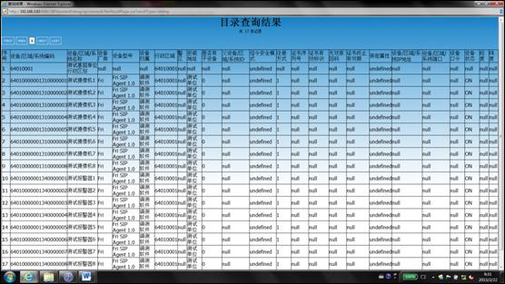
下联调测通过依据：
1） 消息流程及参数符合国标9.5.3.1节规定；
2） 待调测系统收到调测软件目录查询响应后，能够对接收到内容进行解析显示；
4.5 实时点播
4.5.1
调测内容
支持按照国标规定进行互联系统的实时视频点播功能上联、下联调测。上联调测中能够通过视频播放窗口播放互联系统发送的标准格式码流；下联调测中能够向待调测系统发送标准的H.264格式码流。
4.5.2
通过依据
1） 消息流程及参数符合国标9.2节规定；
2） 在调测软件视频播放页面中应能够播放待调测系统的媒体流，通过抓包工具查看RTP媒体流的SSRC值应符合附录C的规定；
下联调测通过依据：
1） 消息流程及参数符合国标9.2节规定；
2） 待调测系统收到调测软件发送的媒体流后，能够对视频进行解码播放；
4.6 设备遥控
4.6.1
调测内容
上联调测中支持向互联系统发送方向、缩放、停止等控制命令；下联调测支持接收处理互联系统发送的控制命令并解析显示。
设备遥控命令结合统一编码对前端进行控制，而不使用字节码中的地址码值。
4.6.2
通过依据
1） 消息流程及参数符合国标9.3.2.1节规定，设备镜头按照遥控指令运动；
下联调测通过依据：
1) 消息流程及参数符合国标9.3.2.1节规定，消息输出窗口输出命令解析结果。例如镜头向上以3倍速运动为“up by speed 3”；
4.7 录像控制
4.7.1
调测内容
支持向互联系统发送录像控制命令或接收处理互联系统发送的录像控制命令。
4.7.2
通过依据
1） 消息流程及参数符合国标9.3.2.2节规定，录像成功后能够在录像文件检索中检索出录像文件并回放及控制；
下联调测通过依据：
1） 消息流程及参数符合国标9.3.2.2节规定；
4.8 录像文件检索
4.8.1
调测内容
支持按照国标规定进行互联系统的上联、下联设备视音频文件检索命令调测。
4.8.2
通过依据
上联调测通过依据：
1） 消息流程及参数符合国标9.7节规定；
2） 调测软件接收到历史文件查询响应后，能够通过弹出页面对记录进行显示，并且历史录像记录的数目和内容与发送内容一致。
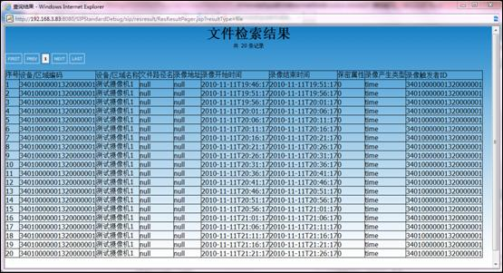
下联调测通过依据：
1） 消息流程及参数符合国标9.7节规定；
2） 待调测系统收到调测软件文件查询响应后，能够对结果数据进行解析、显示；
4.9 视音频文件回放及回放控制
4.9.1
调测内容
支持按照国标规定进行互联系统历史视频回放功能及回放控制的上联调测，能够通过视频播放窗口播放标准格式历史码流，并对回放控制中的码流进行解码播放；
支持按照国标规定进行互联系统的历史视频回放功能及回放控制功能的下联调测，能够发送标准历史码流并根据回放控制命令对发送的码流进行快放、慢放、暂停、播放等控制处理。支持回放视频的时间段长度为5分钟。
4.9.2
通过依据
1） 消息流程及参数符合国标9.8节规定；
2） 在调测软件视频播放页面中能够播放待调测系统的媒体流，通过抓包工具查看RTP媒体流的SSRC值应符合附录C的规定；
3） 在播放媒体流时，能够通过回放控制命令对媒体流进行暂停、播放、快放、慢放等操作，并能通过播放页面看到控制效果；
下联调测通过依据：
1） 消息流程及参数符合国标9.8节规定；
2） 待调测系统收到调测软件发送的媒体流后，能够对视频进行播放；
3） 待调测系统进行回放控制能够对暂停、播放、快放、慢放的码流进行正确解码播放；
4.10设备信息查询
4.10.1
调测内容
支持按照国标规定进行待测平台的设备信息查询功能上联、下联调测。
4.10.2
通过依据
1） 消息流程及参数符合国标9.5.3.2节规定；
下联调测通过依据：
1） 消息流程及参数符合国标9.5.3.2节规定；
4.11设备状态查询
4.11.1
调测内容
支持按照国标规定进行待测平台的设备状态查询功能上联、下联调测。
4.11.2
通过依据
1） 消息流程及参数符合国标9.5.3.3节规定；
下联调测通过依据：
1） 消息流程及参数符合国标9.5.3.3节规定；
4.12视音频文件下载
4.12.1
调测内容
支持按照国标规定进行互联系统历史视频下载功能的上联调测，能够将标准格式历史码流保存为本地文件，并对保存的文件进行播放检验；
支持按照国标规定进行互联系统的历史视频下载功能的下联调测，能够发送标准历史码流。支持下载视频的时间段长度为5分钟。
4.12.2
通过依据
1） 消息流程及参数符合国标9.9节规定；
2） 下载消息成功后，在客户端应能够将媒体保存为本地文件；
3） 下载结束后，使用调测软件播放页面“打开本地文件”功能应能够正常播放该文件。
下联调测通过依据：
1） 消息流程及参数符合国标9.9节规定；
2） 待调测系统收到调测软件发送的媒体流后，能够对视频进行保存及播放；
4.13设备远程启动
4.13.1
调测内容
支持向设备发送远程启动控制命令或接收处理互联系统发送的控制命令。
4.13.2
通过依据
上联调测通过依据：
1） 消息流程及参数符合国标9.3.2.1节规定；
下联调测通过依据：
1） 消息流程及参数符合国标9.3.2.1节规定；
4.14在线状态逻辑
4.14.1
调测内容
支持安全防范视频监控联网系统等使用国标28181中规定的注册、状态信息报送消息进行状态检测逻辑的调测。
4.14.2
通过依据
上联调测检测要点及通过依据如下：
1） 注册消息流程及参数符合国标9.1节规定；
2） 心跳消息流程及参数符合国标9.6节规定；
3） 使用注册、心跳消息进行状态检测逻辑符合使用手册3.6.1节规定；
4） 正常情况下，待调测系统应向调测软件发送注册消息，注册成功后定时发送心跳，并且能及时刷新注册保持在线状态；
5） 与调测工具网络断开情况下，待调测系统应能够在心跳连续超时达到规定次数后重新发起注册过程；
下联调测检测要点及通过依据：
1） 注册消息流程及参数符合国标9.1节规定；
2） 心跳消息流程及参数符合国标9.6节规定；
3） 使用注册、心跳消息进行状态检测逻辑符合使用手册3.6.1节规定；
4） 正常情况下，调测软件向待调测系统发送注册消息，注册成功后定时发送心跳，并且能及时刷新注册保持在线状态，待调测系统应能正确处理并响应调测软件发出的注册和心跳消息；
5） 与调测工具网络断开情况下，待调测系统应能够检测调测工具心跳连续超时达到规定次数或注册过期，并将其状态置为离线；
4.15跨级转发消息处理逻辑
4.15.1
调测内容
支持安全防范视频监控联网系统等使用国标28181中规定的MANSCDP消息进行跨级转发消息处理逻辑的调测。
4.15.2
通过依据
1） 消息流程及参数符合使用手册3.7节规定；
2） 正常处理情况下，调测工具对待调测系统、设备回复响应消息进行成功提示；
3） 异常情况下，调测工具对待调测系统、设备回复响应消息进行失败提示；
5
调试注意事项
5.1 消息体换行符问题
SIP服务器同设备交互的消息中，根据平台部署环境例如操作系统等的不同或SIP消息来源不同，消息体的换行符有“\n”和“\r\n”两种，如下图所示：
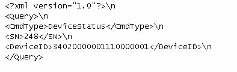
或

在设备解析处理时，应能够适应这两种可能情况，以免设备解析SIP消息错误。
附录A 视频播放页面插件安装配置
A.1 配置客户端IE
IE设置过程如下：
1）打开IE，选择 “工具”à “Internet选项”；
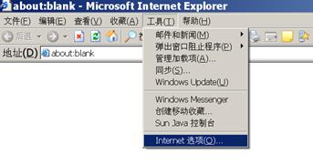
2）选择“安全”选项卡中的“受信任的站点”，并单击“站点”按钮；
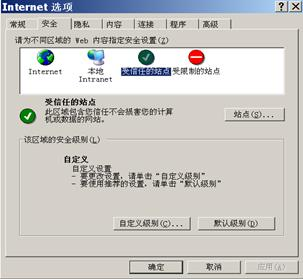
3）在“将该网站添加到区域中”输入调测软件服务器的地址，并单击“添加”，添加调测软件服务器所在机器的IP地址；

4）将地址加入到列表中，并单击“确定”；
5）在下图中选择“自定义级别”；
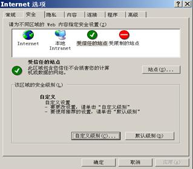
6）在下图的“安全设置”中，将“使用弹出窗口阻止程序”项选择“禁用”。
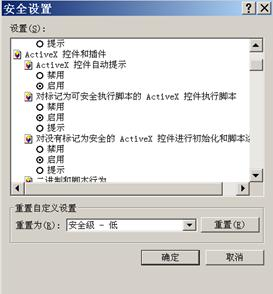
7）在IE9等版本中，有“允许ActiveX筛选”选项，需将其设置为“禁用”，如下图所示：
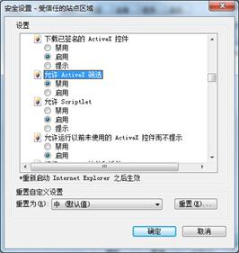
8）除上述说明外的其他配置项均选择启用，并单击“确定”保存配置。
A.2 客户端下载安装媒体播放器插件
在提示页面中点击下载媒体播放插件：
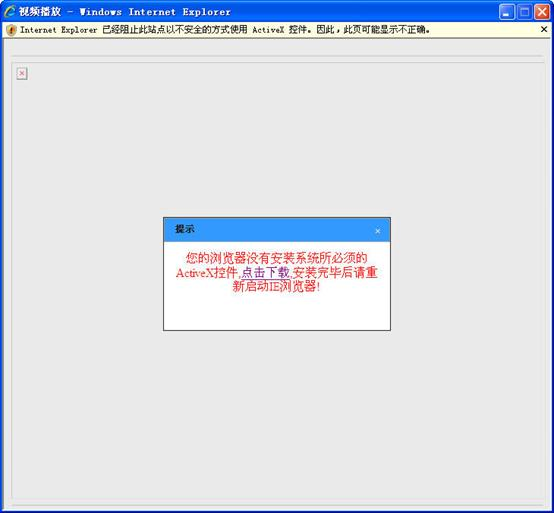
弹出文件下载对话框：

点击运行按钮，出现如下提示：
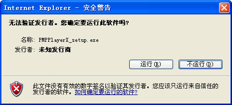
点击运行按钮，出现如下界面：
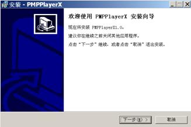
单击“下一步”，出现如下界面：
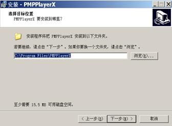
选择程序安装的路径，默认路径是“C:\Program Files\PMPPlayerX”; 单击“下一步”; 创建安装程序存放的文件夹，默认为PMPPlayerX；
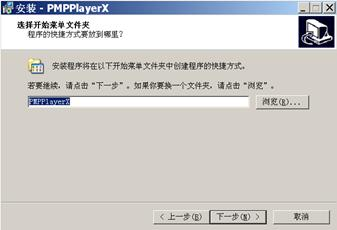
单击“下一步”。下图显示已经选定的安装路径和开始菜单中的文件夹名称：
单击 “安装”，安装程序会自动进行安装并注册插件；
插件注册成功后，出现如下画面：
单击“确定”，然后出现如下界面：
单击“完成”，完成安装。
安装完成后，会在开始菜单中出相应的程序名称。
重新打开视频播放页面可以看到播放窗口，如下图所示：
视频播放页面安装完成。
附录B 调测软硬件环境要求
使用调测软件进行调测，各厂家调测之前需具备的设备列表以及调测接口参数如下，以下涵盖了调测各项功能需用到的主要设备，以及调测对象和调测软件需配置的各项参数。
B.1 监控平台
|
设备 |
用途 |
|
待调测监控平台 |
调试及测试对象 |
|
标准DVR/NVR、IPC、解码器设备 |
用于测试监控平台是否能够按照标准接入标准设备；上联、下联调测中用作视频、报警来源。 |
|
互联系统客户端机器 |
调测注册/注销、目录检索、实时视频点播、回放、回放控制、下载、报警、信息查询、状态查询等功能时用来查看互联系统的测试结果 |
|
调测接口配置参数 |
用途 |
|
监控平台编号 |
监控平台的ID标识，需在调测软件、监控平台中配置 |
|
监控平台IP地址 |
监控平台自身IP地址，需在调测软件中配置 |
|
监控平台端口 |
监控平台自身端口，需在调测软件中配置 |
|
监控平台密码 |
监控平台向调测软件注册密码，需在调测软件、监控平台中配置 |
|
调测软件编号 |
调测平台的ID标识，需在调测软件、监控平台中配置 |
|
调测软件IP地址 |
向调测软件发送消息的目的地址，需在调测软件、监控平台中配置 |
|
调测软件端口 |
向调测软件发送消息的目的端口，需在调测软件、监控平台中配置 |
|
调测软件密码 |
调测软件向互联系统注册密码，需在调测软件、监控平台中配置 |
附录C SSRC值处理说明
SDP中扩展y字段表示SSRC值，每个RTP流拥有一个全局唯一的SSRC值，该值由各个互联系统自行产生，作为互联系统之间发送媒体流的标识使用。
SSRC值由10位十进制数字组成，表示格式如下：
Dddddddddd
第一位为历史或实时媒体流的标识位，1为历史，0为实时；接下来的五位取20位SIP服务器ID之中的后面4到8位作为域标识；例如“13010000002000000001”中红色数字；后四位作为域内流标识，是一个与当前域内SSRC值后四位不重复的四位十进制整数。
SDP消息体中携带SSRC值示例如下：
v=0
o=64010000002020000001 0 0 IN IP4 172.18.16.1
s=##ms20090428 log-restart-callid-ssrc-reinvite
c=IN IP4 172.18.16.1
t=0 0
m=video 6000 RTP/AVP 96 97 98
a=sendonly
a=rtpmap:96 PS/90000
a=rtpmap:97 MPEG4/90000
a=rtpmap:98 H264/90000
y=0100000001
1）监控平台点播域内设备视频SSRC处理方式
监控平台点播域内设备视频时，SSRC值由监控平台产生并通过Invite请求发送给设备使用，设备在回复的200OK消息中须携带此值，并在发送的媒体流中使用此值作为RTP的SSRC值。流程图如下：
2）监控系统点播外域系统视频SSRC处理方式
监控系统之间相互点播视频时，在被点播监控系统回复的200OK SDP消息体中携带这个值，被点播监控系统发送的RTP码流使用该值作为SSRC值。流程图如下：